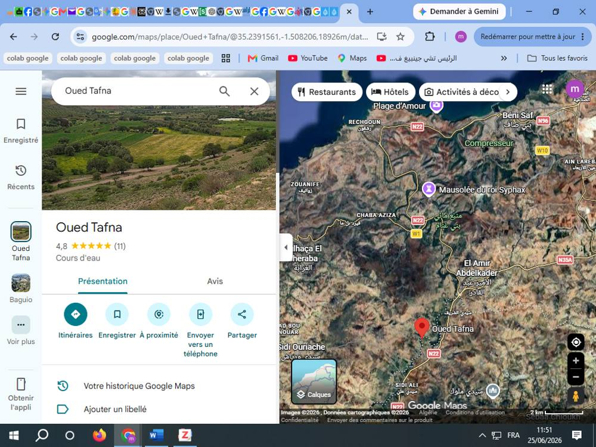

الفصل الثالث: ولهاصة الغرابة من الفتح الإسلامي إلى تحالف جبال ترارة
مقدمة
تُعدّ قبيلة ولهاصة من أعرق القبائل الزناتية التي حافظت على حضورها التاريخي في أقصى الغرب الجزائري72، ولا سيما في المجال الممتد بين وادي تافنة وساحل تلمسان. وقد ارتبط تاريخها ارتباطًا وثيقًا بتاريخ المغرب الأوسط، إذ تعاقبت عليها مختلف الكيانات السياسية التي حكمت المنطقة منذ العهد النوميدي، مرورًا بالعهد الروماني والفتح الإسلامي، ثم الدول الزناتية والمرابطيةوالموحديةوالزيانية، وصولًا إلى العهد العثماني. ورغم أن المصادر التاريخية لم تُفرد لهذه القبيلة مؤلفات مستقلة، فإن أخبارها تتوزع في كتب التاريخ العام، وكتب الأنساب، والجغرافيا، والتراجم، مما يفرض اعتماد منهج نقدي يقوم على جمع الروايات المتفرقة ومقارنتها وتحليلها في ضوء المعطيات التاريخية والأثرية والأنثروبولوجية الحديثة73.
وتكتسب دراسة تاريخ ولهاصة أهميتها من كونها تمثل نموذجًا لاستمرارية البنية القبلية في المغرب الإسلامي، حيث استطاعت المحافظة على وجودها وهويتها عبر تحولات سياسية عميقة، كما أسهمت في عدد من الأحداث الكبرى التي شهدها الغرب الجزائري، سواء خلال الفتوحات الإسلامية، أو في ظل الدول الزناتية، أو أثناء الصراع بين الزيانيين والمرينيين، ثم في مقاومة التوسع الإسباني على السواحل الغربية للجزائر. وقد ساعدها موقعها الجغرافي الاستراتيجي، المشرف على الطرق الرابطة بين تلمسان والبحر المتوسط، على أداء أدوار سياسية وعسكرية واقتصادية بارزة عبر مختلف المراحل التاريخية.
ويهدف هذا الفصل إلى تتبع المسار التاريخي لقبيلة ولهاصة منذ أقدم الإشارات إليها في المصادر، مع إبراز تطور مجالها الجغرافي، وعلاقاتها بالقبائل الزناتية المجاورة، ومكانتها داخل التنظيمات السياسية التي تعاقبت على المغرب الأوسط، مع التوقف عند أبرز الأحداث التي شاركت فيها، وتحليل الروايات الواردة بشأنها وفق منهج نقدي يوازن بين المصادر العربية والإسلامية، والكتابات الأوروبية، والدراسات الحديثة، بعيدًا عن القراءات.
.2.3الولاة الأمويين
مثّل عهد الولاة الأمويين مرحلةً مفصلية في تاريخ قبائل ولهاصة، إذ شهدت المنطقة الواقعة بين وادي تافنة وساحل تلمسان اندماجًا تدريجيًا في الإدارة الإسلامية الناشئة بعد استكمال فتح المغرب الأوسط. وقد أصبحت ديار ولهاصة، ولا سيما فرع ولهاصة الغرابة، جزءًا من المجال العسكري والإداري الذي اعتمدت عليه الدولة الأموية في تأمين الحدود الغربية للمغرب الإسلامي، وفي الإعداد للحملات العسكرية المتجهة نحو المغرب الأقصى ثم الأندلس.
وتشير المصادر إلى أن عدداً من بطون ولهاصة، وفي مقدمتها ورفجومة، برزت خلال القرن الثاني الهجري بوصفها قوة قبلية مؤثرة، إذ شاركت في الأحداث السياسية والعسكرية التي عرفها المغرب الإسلامي. ويؤكد ابن خلدون أن ورفجومة كانت من بطون ولهاصة74، وهو ما يدل على أن أشهر تجمعات ولهاصة كانت متمركزة في الساحل التلمساني والمجال الغربي من المغرب الأوسط، قبل انتشار بعض فروعها في أقاليم أخرى.
كما ارتبطت هذه المرحلة بظهور شخصيات عسكرية بارزة تُنسب إلى ولهاصة، وفي مقدمتها طارق بن زياد، الذي تولى ولاية طنجة في عهد موسى بن نصير، ثم قاد حملة فتح الأندلس سنة 92هـ/711م. وإذا صحّت الروايات التي تجعله من ولهاصة، فإن ذلك يعكس المكانة العسكرية التي بلغتها القبيلة في العصر الأموي، ودورها في استكمال الفتوحات الإسلامية بالمغرب والأندلس.
غير أن نهاية العصر الأموي شهدت تغيرات سياسية عميقة، تمثلت في انتشار الدعوات الخارجية، ولا سيما الصفرية، بين عدد من قبائل المغرب الأوسط. وكان من أبرز بطون ولهاصة التي انخرطت في هذه التحولات ورفجومة، التي برزت لاحقًا في أحداث إفريقية خلال القرن الثاني الهجري بقيادة عاصم بن جميل الورفجومي، وهو ما يعكس استمرار حضور ولهاصة في الحياة السياسية والعسكرية بعد سقوط الدولة الأموية.
.1.2.3ارشقولالاسلامية (رشقون)
شكّل تراجع مملكة ألطافا خلال النصف الثاني من القرن السابع الميلادي مرحلة انتقالية حاسمة في تاريخ غرب الجزائر، إذ تزامن ضعف الممالك الأمازيغية المستقلة مع التوسع التدريجي للدولة الإسلامية نحو المغرب الأوسط. فبعد قرون من هيمنة الكيانات المحلية التي ورثت جزءًا من الإرث السياسي الروماني المتأخر، بدأت المنطقة تعرف إعادة تشكيل عميقة لبنيتها السياسية والعمرانية، أدت إلى انتقالها من نظام الممالك الإقليمية المستقلة إلى الاندماج التدريجي ضمن المجال الإسلامي الناشئ75.
وفي هذا السياق، برز المجال الممتد بين وادي التافنة وجبال ترارة والساحل المتوسطي بوصفه فضاءً استراتيجيًا يربط المغرب الأوسط بالمغرب الأقصى، وهو مجال احتفظ بأهميته منذ العهد النوميدي، حين ارتبط بمدينة سيقا، ثم عرف لاحقًا إعادة تنظيم عمراني خلال العصر الإسلامي المبكر حول مراكز جديدة، من بينها أرشقول (رشقون). ويُرجَّح أن هذه الأخيرة ورثت جزءًا من الوظائف الاقتصادية والمجالية التي كانت تؤديها المراكز القديمة، في إطار استمرارية تاريخية وحضارية طويلة المدى76.
وقد بدأ الحضور الإسلامي الفعلي في غرب الجزائر خلال ولاية أبي المهاجر دينار (55–63هـ/675–683م)، الذي انتهج سياسة أكثر مرونة تجاه القبائل الأمازيغية المحلية، قائمة على بناء التحالفات السياسية بدل الاقتصار على الحملات العسكرية. وقد ساهم هذا التوجه في توسيع دائرة النفوذ الإسلامي داخل المغرب الأوسط وتهيئة الظروف الملائمة لترسيخ الاستقرار السياسي في المنطقة.77
يورد عبد القادر بن يخلف78، في كتابه ولهاصة: تاريخ وأصالة وأحداث، رواية تربط منطقة أرشقول (رشقون) بالمراحل الأولى للفتح الإسلامي للمغرب الأوسط، حيث يشير إلى أنها كانت تُعرف آنذاك باسم سيقا، وأنها شهدت حوالي سنة 683م تجمعًا لحامية عسكرية إسلامية بقيادة أبي المهاجر دينار، استعدادًا لمواجهة قوات كسيلة البربري. ويرى صاحب الكتاب أن اختيار المنطقة لم يكن اعتباطيًا، بل ارتبط بموقعها الاستراتيجي المطل على الساحل والقريب من محاور الاتصال التي تربط غرب المغرب الأوسط بسهوله الداخلية، الأمر الذي قد يكون منحها أهمية لوجستية في تحركات الجيوش الإسلامية خلال تلك المرحل.
ومع عودة عقبة بن نافع إلى قيادة الجيوش الإسلامية، دخلت المنطقة مرحلة جديدة اتسمت بتأمين المحاور الاستراتيجية الرابطة بين القيروان والمغرب الأقصى. وقد شكّل حوض وادي التافنة أحد أهم هذه المحاور بحكم موقعه الرابط بين الداخل والساحل، الأمر الذي أدى إلى اندماج المراكز البشرية الواقعة ضمن هذا المجال، ومنها أرشقول، في شبكة المواصلات والمسالك التجارية الجديدة التي صاحبت التوسع الإسلامي79.
وخلال ولاية موسى بن نصير (85–95هـ/704–714م)، انتقل الوجود الإسلامي من الطابع العسكري المؤقت إلى بناء منظومة إدارية وسياسية أكثر استقرارًا. واعتمدت الإدارة الأموية على إدماج القبائل الأمازيغية في المنظومتين العسكرية والإدارية، مما أسهم في تسريع انتشار الإسلام وإعادة تنظيم المجال الإقليمي وفق متطلبات الدولة المركزية80.
ومع بداية عهد الولاة الأمويين، أصبح المجال الممتد بين سيقا القديمة وأرشقول جزءًا من الشبكة الإدارية للمغرب الأوسط، وتحولت القبائل المحلية إلى فاعل رئيسي في الحياة السياسية والاقتصادية، كما أُعيد تنشيط المسالك التجارية القديمة التي كانت تربط الساحل بالداخل ضمن إطار سياسي جديد قائم على الاندماج في الدولة الإسلامية بدل الانتماء إلى الممالك المحلية السابقة81.
وتشير المصادر الجغرافية الإسلامية اللاحقة إلى أهميةأرشقولبوصفها محطة بحرية ومجالًا رابطًا بين الساحل المتوسطي والداخل التلمساني، الأمر الذي يعكس استمرار الوظيفة الاستراتيجية التي عرفتها المنطقة عبر مختلف المراحل التاريخية82. وهكذا تمثل أرشقول إحدى حلقات الاستمرارية المجالية التي تربط بين الإرث النوميدي والتنظيمات الإسلامية الوسيطية، مع احتفاظ المنطقة بخصوصيتها الجغرافية والقبلية عبر الزمن،وقد اضطلعت منطقة ولهاصة بدور بارز في استكمال الفتوحات الإسلامية بالمغرب الأقصى، وأسهم أبناؤها في العمليات العسكرية التي مهدت لفتح الأندلس. وتبرز أهميتها التاريخية في كونها تُعدّ موطن أحد أعظم القادة العسكريين في تاريخ الإسلام، وهو طارق بن زياد، قائد فتح الأندلس سنة 92هـ/711م، الذي ارتبط اسمه بأحد أبرز التحولات السياسية والحضارية في تاريخ الغرب الإسلامي.
.2.2.3طارق بن زياد الولهاصي
يُعدّ انتساب طارق بن زياد إلى قبيلة ولهاصة من القضايا التي أثارت جدلًا بين المؤرخين والنسّابين. فالمصادر الإسلامية المبكرة لم تقدّم معطيات دقيقة وحاسمة بشأن أصله القبلي، وإنما ركّزت أساسًا على دوره العسكري بوصفه أحد أبرز قادة الفتح الإسلامي بالمغرب والأندلس في عهد الدولة الأموية وتحت ولاية موسى بن نصير. وقد انصبّ اهتمام هذه المصادر على إنجازاته العسكرية ومسيرته القيادية أكثر من اهتمامها بتحديد انتمائه القبلي أو أصوله الإثنية؛ إذ لم تورد أخبارًا واضحة في هذا الشأن، كما يظهر في روايات ابن عبد الحكم83والبلاذري84التي تناولت فتوح المغرب والأندلس من منظور الأحداث العسكرية والسياسية بالدرجة الأولى.ويُعزى جانب من هذا الغموض كذلك إلى ندرة المصادر الأندلسية المبكرة وفقدان عدد مهم من المصنفات التاريخية المعاصرة لمرحلة الفتح85، الأمر الذي جعل المؤرخين اللاحقين يعتمدون على روايات متأخرة ومتباينة، وأسهم في ظهور اختلافات بشأن أصول طارق بن زياد وانتمائه القبلي86.
تشير المصادر التاريخية إلى أن أقدم الروايات المتعلقة بأصل طارق بن زياد تتفق على انتمائه إلى العنصر البربري، دون أن تقدم تحديدًا دقيقًا لقبيلته. فقد ذكر ابن خلكان87 أن طارق بن زياد «كان بربريًا»، كما أورد ابن عذاري المراكشي 88أخبارَه في سياق مشاركة البربر في الفتح الإسلامي للأندلس تحت قيادة موسى بن نصير. وتكتسب هذه الرواية أهميتها من كونها تحظى بقبول واسع لدى المؤرخين القدامى والباحثين المحدثين، الذين يجمعون في الغالب على الأصل البربري لطارق وإن اختلفوا في تحديد انتمائه القبلي الدقيق.وفي مقابل هذا الاتفاق العام على الأصل البربري لطارق بن زياد، ظهرت في بعض المصادر المتأخرة رواية تنسبه إلى قبيلة نفزة، حيث يرد عند عدد من المؤرخين أنه «طارق بن زياد الليثي، مولى موسى بن نصير، من نفزة». وقد أورد هذه الرواية حسبالمقري89. غير أن هذه النسبة أثارت إشكالًا منهجيًا لدى بعض الباحثين المحدثين الذين خلطوا بين قبيلة «نفزة» وبين «نفزاوة»، فاعتبروا أن الانتساب إلى الأولى يقتضي الانتساب إلى الثانية.وعلى الرغم من تعدد الروايات التي حاولت ربط طارق بن زياد بقبائل المغرب الأقصى، وعلى رأسها رواية انتسابه إلى قبيلة نفزة، ثم الروايات اللاحقة التي جعلته من بعض بطون البربر المستقرة في منطقة طنجة وما جاورها، فإن هذه الأخبار تظل محل نظر من الناحية المنهجية. أما الروايات التي نسبتْه إلى نفزة أو غيرها من قبائل المغرب الأقصى فقد وردت في مصادر متأخرة نسبيًا، الأمر الذي يضعف قيمتها الإثباتية عند مقارنتها بالمصادر الأقرب زمنًا إلى الأحداث.
ويزداد هذا الإشكال تعقيدًا بسبب الخلط الذي وقع فيه بعض الباحثين بين قبيلة نفزة وقبائل نفزاوة، رغم أن المصادر الأنسابية90 والجغرافية تميز بينهما تمييزًا واضحًا من حيث المجال الجغرافي والانتماء القبلي. ومن ثم فإن الاستناد إلى رواية نفزة لإثبات انتساب طارق إلى نفزاوة أو إلى بعض قبائل المغرب الأقصى لا يقوم على دليل نصي صريح، بل على استنتاجات لاحقة فرضها التشابه اللفظي بين التسميتين.
كما أن بعض الروايات الواردة في أخبار الفتح تُظهر طارق بن زياد عند دخوله طنجة وكأنه يكتشف مركزًا حضريًا جديدًا ذا أهمية استراتيجية كبيرة، وهو ما استُخدم من قبل بعض الباحثين بوصفه قرينة على أن موطنه الأصلي لم يكن بالضرورة ضمن المجال القبلي المحيط بطنجة. غير أن هذه القرينة تبقى ذات قيمة محدودة، إذ لا يمكن الجزم من خلالها بأصله الجغرافي أو القبلي. وعليه، فإن جميع الروايات التي تربط طارق بن زياد بقبائل المغرب الأقصى، سواء نفزة أو غيرها، تظل فرضيات تاريخية تفتقر إلى شهادة معاصرة وحاسمة، في حين يبقى الثابت الوحيد الذي تكاد تجمع عليه المصادر هو انتماؤه إلى العنصر البربري دون تحديد قبيلته على وجه اليقين.
ذهبت بعض الكتابات المحلية والدراسات الحديثة إلى ربط طارق بن زياد بمنطقة الأوراس، وبخاصة بخنشلة الحالية، استنادًا إلى الروايات التي تجعل من ورفجومة القبيلة التي ينتمي إليها أو يرتبط بها نسبًا. وقد اعتمد أصحاب هذا الرأي على الأخبار الواردة في المصادر الوسيطة بشأن نشاط ورفجومة في المجال الأوراسي، ولا سيما ما يتعلق بلجوء حبيب بن عبد الرحمن إلى جبل أوراس ومطاردة عاصم بن جميل الورفجومي له، باعتبار ذلك قرينة على وجود موطن للقبيلة في المنطقة التي تعرف اليوم بخنشلة91. غير أن هذا الاستنتاج يواجه عدة إشكالات منهجية؛ إذ لا تذكر المصادر الإسلامية المبكرة أي صلة بين طارق بن زياد وخنشلة أو الأوراس، كما لا تورد المصادر الوسيطة نصًا صريحًا يجعل أنجاد خنشلة موطنًا أصليًا لورفجومة أو لطارق بن زياد،فالمصادر تشير إلى أن ورفجومةكانت من القبائل الصفريمن فروع ولهاصة التي لعبت دورًا سياسيًا وعسكريًا بارزًا في المغرب الإسلامي خلال القرن الثاني الهجري، وكانت مرتبطة بالحركة الخارجية التي امتد نفوذها من المغرب الأوسط إلى إفريقية. وقد ارتبطت هذه القبيلة بمجال تلمسان وما جاورها أكثر من ارتباطها الحصري بالأوراس، لاسيما أن الدولة الصفرية التي أقامها بنو يفرن اتخذت من تلمسان مركزًا لهاويؤكد ابن خلدون أن ورفجومة لم تكن قبيلة مستقلة عن الإطار الولهـاصي، بل عدّها ضمن بطون ولهاصة، إذ يقول: «وأما سائر ولهاصة من ورفجومة وغيرهم فهم لهذا العهد أوزاع لذلك، أشهرهم قبيلة بساحل تلمسان اندرجوا في كومية وعدوا منهم بالنسب والخلط...». ويستفاد من هذا النص أن ابن خلدون كان يربط أشهر تجمعات ولهاصة، بما فيها ورفجومة، بساحل تلمسان والمغرب الأوسط الغربي92، لا بالمجال الأوراسي. كما يذكر وجود فرع آخر من ولهاصة ببسيط بونة (عنابة)، مما يدل على انتشار القبيلة في أقاليم متعددة من المغرب الأوسطويتقاطع هذا المعطى مع ما سبق بيانه في الفصل الأول بشأن الانقسام الجغرافي لقبيلة ولهاصة إلى فرعين كبيرين عُرفا في المصادر المحلية بــ«ولهاصة الشراقة» و«ولهاصة الغرابة».
تُرجّح بعض الدراسات المعاصرة أن طارق بن زياد وُلد نحو سنة 50هـ/670م في المجال الواقع غرب المغرب الأوسط، وتحديدًا في المنطقة التي تدخل اليوم ضمن غرب الجزائر93، ولم يقتصر الربط بين طارق بن زياد وقبيلة ولهاصة على الروايات المحلية والمصادر العربية الوسيطة، بل وجد صداه أيضًا في عدد من الدراسات والكتابات الغربية الحديثة. فقد كان الرحالة والمؤرخ الألماني هاينريش بارت(Heinrich Barth)94 من أوائل الباحثين الغربيين الذين أشاروا إلى انتساب طارق بن زياد إلى قبيلة ولهاصة (Ulhassa/Oulhaça) المستقرة في المجال الممتد حول وادي تافنة غرب الجزائر. كما أعاد المؤرخ العسكري البريطاني ديفيد نيكول التأكيد على هذا المعطى عند تناوله الفتوحات الإسلامية، حيث وصف طارق بن زياد بأنه قائد بربري ينتمي إلى قبيلة ولهاصة بمنطقة تافنة95. وتكتسب هذه الإشارات أهمية خاصة لأنها تمثل استمرارًا للرواية الولهـاصية في الكتابات التاريخية الغربية خلال القرنين التاسع عشر والحادي والعشرين. كما أن الدراسات الأنثروبولوجية الحديثة الخاصة بقبيلة ولهاصة تؤكد استمرارية هذا الكيان القبلي في غرب الجزائر، بما يعكس عمق تجذره التاريخي في المنطقة96. وبذلك تشكل هذه الشهادات، رغم اختلاف طبيعتها ومناهجها، قرائن إضافية على تداول الانتساب الولهـاصي لطارق بن زياد داخل الأدبيات التاريخية الحديثة، وإن كانت لا تُغني عن ضرورة إخضاع هذه الرواية للنقد التاريخي ومقارنتها بالمصادر الإسلامية المبكرة.
وتذهب بعض الروايات الشفوية المتداولة في ولهاصة إلى أن طارق بن زياد وُلد في المجال الممتد بين وادي تافنة وساحل بني صاف الحالي. وتحديدًا، تربط بعض التقاليد المحلية مولده بقرية تافنة التابعة لبلدية سيدي ورياش بدائرة ولهاصة في ولاية عين تموشنت) انظر الشكل5(، باعتبارها جزءًا من المجال التاريخي الذي ارتبط باسم قبيلة ولهاصة عبر القرون. غير أن هذه الروايات تظل من قبيل الذاكرة الجماعية والموروث الشفوي المحلي، إذ لا تذكر المصادر الإسلامية المبكرة ولا المدونات الوسيطة المعروفة موضعًا محددًا لميلاد طارق بن زياد، الأمر الذي يجعل هذا التحديد الجغرافي فرضية محلية تستأنس بها الدراسات التاريخية دون أن ترقى إلى مرتبة الدليل القطعي.


الشكل 5. قرية تافنة (بلدية سيدي ورياش، دائرة ولهاصة، ولاية عين تموشنت)، أحد المواقع التي تربطها الروايات الشفوية المحلية بميلاد طارق بن زياد
يُعدّ طارق بن زياد أحد أبرز القادة العسكريين في صدر الإسلام، وقد برز اسمه خلال مرحلة استكمال فتح بلاد المغرب في عهد الخليفة الأموي الوليد بن عبد الملك (86–96هـ/705–715م). وتُرجّح أغلب الدراسات الحديثة أنه وُلد نحو سنة 50هـ/670م في المغرب الأوسط، مع اختلاف الباحثين في تحديد موطنه القبلي والجغرافي على وجه الدقة، وإن كانت غالبية المصادر تجمع على أصله البربري97.
بدأ طارق بن زياد حياته العسكرية في جيوش موسى بن نصير بعد استكمال إخضاع المغرب، وأظهر كفاءة كبيرة في قيادة الجيوش وإدارة العمليات العسكرية، مما دفع موسى إلى تعيينه واليًا على طنجة، وتكليفه بمواصلة تثبيت النفوذ الإسلامي في المناطق الشمالية من المغرب الأقصى وتأمين الثغور المطلة على مضيق جبل طارق98. وخلال هذه المرحلة أسهم في إخضاع عدد من القبائل المحلية، وعمل على نشر الإسلام بين سكان المنطقة، كما أقام علاقات مع حاكم سبتة يوليان، الذي كان له دور في تسهيل عبور المسلمين إلى شبه الجزيرة الإيبيرية99.
وفي سنة 92هـ/711م أسند إليه موسى بن نصير قيادة الحملة التي عبرت المضيق إلى الأندلس على رأس جيش غالبيته من البربر. وقد حقق طارق انتصارًا حاسمًا في معركة وادي لكة (Guadalete)، التي قُتل فيها الملك القوطي لذريق، فانهارت المقاومة القوطية وتهيأت الظروف لفتح معظم مدن الأندلس، بما فيها قرطبة وطليطلة، خلال فترة وجيزة100. ويُعد هذا الانتصار من أهم التحولات العسكرية في تاريخ البحر الأبيض المتوسط، إذ مهد لقيام الحضارة الإسلامية في الأندلس التي استمرت قرابة ثمانية قرون.
وبعد استكمال جانب كبير من الفتح، التحق به موسى بن نصير، ثم استدعاهما الخليفة الوليد بن عبد الملك إلى دمشق سنة 95هـ/714م لتقديم تقرير عن الفتوح والغنائم. وتختلف الروايات بشأن ما جرى لطارق بعد ذلك، إلا أن أغلب المصادر تشير إلى أنه ابتعد عن الحياة السياسية والعسكرية101، وأقام في بلاد الشام حتى وفاته سنة 101هـ/720م في دمشق، في حين لا تذكر المصادر الإسلامية المبكرة خبرًا يفيد بعودته إلى بلاد المغرب.
ورغم الغموض الذي يحيط ببعض مراحل حياته، فإن شخصية طارق بن زياد ظلت مرتبطة بأحد أعظم الإنجازات العسكرية في التاريخ الإسلامي، إذ نجح في قيادة حملة فتحت آفاقًا حضارية وسياسية جديدة، وجعلت اسمه يقترن بفتح الأندلس وبداية مرحلة جديدة في تاريخ الغرب الإسلامي وأوروبا.
.3.3ولهاصة والحركة الصفرية في عهد بني يفرن
شهد المغرب الإسلامي، عقب قيام الدولة العباسية سنة 132هـ/750م، اتساع نفوذ المذاهب الخارجية، ولا سيما المذهب الصفري، الذي وجد قبولًا لدى عدد من قبائل زناتة102، وفي مقدمتها بنو يفرن وولهاصة وبطونها، وعلى رأسها ورفجومة103. وقد بايع الزناتيون أبا قرة اليفرني إمامًا للصفرية، فنجح في توحيد عدد من قبائل المغرب الأوسط والمغرب الأقصى، واتخذ من تلمسان مركزًا لنفوذه السياسي والعسكري، لتصبح المدينة عاصمة للدولة الصفرية اليفرنية وأحد أهم معاقل الخوارج الصفرية في بلاد المغرب104.وفي هذا السياق، انضمت قبائل ولهاصة إلى التحالف اليفرني، وشاركت في دعم الدولة الصفرية الناشئة، كما برزت ورفجومة بوصفها أحد أهم بطون ولهاصة المنخرطة في الحركة الصفرية، وكان لها دور عسكري وسياسي بارز في الصراع مع السلطة العباسية105.
وتجلّى هذا الدور بصورة أوضح في إفريقية، حين قاد عاصم بن جميل الورفجومي الحركة الصفرية التي بسطت سيطرتها على القيروان بعد انهيار حكم بني حبيب، واستطاعت ورفجومة فرض نفوذها على المدينة مدة من الزمن، قبل أن تنتهي دولتها على يد الإمام الإباضي أبي الخطاب عبد الأعلى بن السمح المعافري سنة 141هـ/758م106.
أما في المغرب الأوسط، فقد استمرت الدولة الصفرية اليفرنية في تلمسان بقيادة أبي قرة اليفرني، الذي حافظ على نفوذه خلال السنوات الأولى من العصر العباسي، مستفيدًا من تحالفات القبائل الزناتية، وفي مقدمتها ولهاصة. غير أن الخلافة العباسية عملت على استعادة السيطرة على المغرب، فعينت عددًا من الولاة لإخماد الثورات الخارجية، كان منهم عمر بن حفص الهزّارمرد (تولى إفريقية سنة 151هـ/768م) الذي واجه اضطرابات المغرب، إلا أن القضاء النهائي على النفوذ الصفري لم يتحقق إلا في عهد يزيد بن حاتم المهلبي، الذي تولى إفريقية سنة 155هـ/772م، وتمكن بعد حملات متتابعة من إضعاف نفوذ أبي قرة وإخضاع معظم القبائل المتحالفة معه، مما أدى إلى أفول الدولة الصفرية في تلمسان وانحسار نفوذها السياسي107.
وتبرز أهمية هذه المرحلة في أنها تكشف عن المكانة التي احتلتها ولهاصة داخل التحالفات الزناتية، إذ لم تكن مجرد قبيلة محلية، بل كانت عنصرًا فاعلًا في قيام الدولة الصفرية بالمغرب الأوسط، كما كان لفرعها ورفجومة دور بارز في الأحداث السياسية والعسكرية التي شهدتها إفريقية خلال القرن الثاني الهجري.
.4.3دخول ولهاصة في النفوذ الفاطمي
شكّل قيام الدولة الفاطمية سنة 296هـ/909م نقطة تحول حاسمة في تاريخ المغرب الإسلامي، إذ أنهى الفاطميون حكم الدولة الرستمية بإسقاط عاصمتها تاهرت، ثم شرعوا في توسيع نفوذهم نحو أقاليم المغرب الأوسط الغربي، بهدف إخضاع المراكز الحضرية والقبائل الزناتية التي كانت تتمتع باستقلال واسع خلال العصر الرستمي. وفي هذا الإطار دخل إقليم تلمسان، بما يضمه من مدن وقبائل، ضمن المجال السياسي للدولة الفاطمية، ومن بينها مدينة أرشقول الواقعة في بلاد ولهاصة108.وتُعد أرشقول من المدن القديمة التي أشار إليها أبو عبيد الله البكري ضمن مدن إقليم تلمسان، وكانت تمثل مركزًا عمرانيًا وتجاريًا يخدم القبائل المستقرة في السهل الساحلي الممتد بين وادي تافنة وساحل البحر المتوسط. وبحكم موقعها الاستراتيجي على طرق المواصلات بين تلمسان والمغرب الأقصى، فقد اكتسبت أهمية سياسية واقتصادية جعلتها تدخل ضمن المناطق التي حرص الفاطميون على إخضاعها بعد القضاء على الدولة الرستمية. ²
ولم تذكر المصادر الكلاسيكية وقوع حصار مستقل لمدينة أرشقول أو تاريخًا محددًا لسقوطها، إلا أن دخولها في النفوذ الفاطمي يُفهم من خلال سيطرة الفاطميين على إقليم تلمسان بأكمله عقب سنة 296هـ/909م. ومن ثم، فإن انتقال المدينة إلى الحكم الفاطمي كان جزءًا من إعادة تنظيم المجال السياسي للمغرب الأوسط، وليس نتيجة حملة عسكرية موجهة ضدها وحدها109.
وخلال هذه المرحلة أصبحت ولهاصة، بما فيها مدينة أرشقول، جزءًا من النظام الإداري الذي أقامه الفاطميون في المغرب الأوسط، غير أن سيطرتهم على القبائل الزناتية لم تكن مستقرة بصورة كاملة، إذ استمرت حركات المقاومة المحلية، ولا سيما من مغراوة وبني يفرن، الذين تمكنوا تدريجيًا من استعادة نفوذهم في غرب المغرب الأوسط خلال النصف الثاني من القرن الرابع الهجري. ومع بروز محمد بن خزر المغراوي نحو 362هـ/973م، انتقلت تلمسان وما جاورها من جديد إلى النفوذ الزناتي، لتنتهي بذلك المرحلة الفاطمية المباشرة في المنطقة110.
وتبرز أهمية هذه المرحلة في تاريخ ولهاصة في كونها تمثل حلقة انتقالية بين العصر الرستمي والعصر الزناتي، حيث خضعت المنطقة لفترة من الحكم الفاطمي قبل أن تستعيد القبائل الزناتية دورها السياسي، وهو ما أسهم في استمرار الطابع القبلي للمنطقة رغم تغير القوى الحاكمة.
.5.3عهد مغراوة ودور ولهاصة في إمارة تلمسان
عقب تراجع نفوذ بني يفرن، آلت زعامة المغرب الأوسط الغربي إلى قبيلة مغراوة الزناتية بقيادة محمد بن خزر، الذي تمكن من توسيع سلطته على القسم الغربي من المغرب الأوسط، واتخذ من تلمسان مركزًا لإمارتهوقد أصبحت المدينة في عهده عاصمةً سياسيةً وإداريةً لإمارة مغراوة، واستمر نفوذها ممتدًا على القبائل المجاورة، ومنها قبائل ولهاصة التي ظلت جزءًا من المجال السياسي والعسكري التابع لتلمسان111.ولم يكن ارتباط ولهاصة بإمارة مغراوة ارتباطًا شكليًا، بل فرضته وحدة المجال الجغرافي وتشابك المصالح السياسية والاقتصادية بين القبائل الزناتية. فقد كانت ديار ولهاصة تمتد على الساحل الغربي للمغرب الأوسط، بين وادي تافنة وساحل تلمسان، وهو ما جعلها تمثل إحدى الدعائم القبلية للإمارة المغراوية، سواء في حماية الطرق التجارية أو في الدفاع عن الثغور الغربية112.
كما حافظت ولهاصة على مكانتها داخل التحالفات الزناتية، مستفيدة من موقعها الاستراتيجي على الساحل ومن قربها من تلمسان، الأمر الذي جعلها تظل جزءًا لا يتجزأ من المجال السياسي للتلمساني طوال عهد مغراوة. ويؤكد ابن خلدون هذا الارتباط عندما يذكر أن أشهر بطون ولهاصة كانت «بساحل تلمسان»، وهو ما يعكس استمرار اندماج القبيلة في المحيط السياسي والجغرافي للإمارات الزناتية التي تعاقبت على حكم المنطقة113.
وقد أشار عدد من الباحثين المحدثين إلى أن تبعية ولهاصة لتلمسان لم تنقطع بتغير الأسر الحاكمة، بل استمرت خلال عهد بني يفرن ثم مغراوة، وهو ما يفسر حضورها الدائم في الأحداث السياسية والعسكرية التي شهدها الغرب الجزائري خلال العصر الوسيط.
ومع تأسيس الدولة الحمادية سنة 405هـ/1014م، دخلت تلمسان وغرب المغرب الأوسط في مرحلة جديدة من التنافس بين الحماديينومغراوة. ورغم الاعتراف الاسمي بسيادة الزيريين ثم الحماديين على أجزاء من المغرب الأوسط، فإن مغراوة احتفظت بنفوذها الفعلي في تلمسان والمناطق المجاورة، واستمرت قبائل ولهاصة ضمن هذا الإطار السياسي الزناتي، مع احتفاظها باستقلالها القبلي النسبي. ولم ينته هذا الوضع إلا بدخول المرابطين بقيادة يوسف بن تاشفين إلى تلمسان سنة 474هـ/1081م114، لتبدأ مرحلة سياسية جديدة في تاريخ المنطقة115.
.6.3ولهاصة في العهد المرابطي
على الرغم من الفتن والصراعات السياسية التي شهدها إقليم تلمسان خلال القرن الرابع والخامس الهجريين، بين القبائل الزناتية، وعلى رأسها مغراوة وبنو يفرن، والقبائل الصنهاجية ممثلةً في الزيريينوالحماديين، إلى جانب التنافس بين الفاطميين والأمويين بالأندلس، ثم آثار الهجرة الهلالية، فإن مدينة تلمسان ومراكزها العمرانية التابعة لها، ومنها أرشقول، حافظت على مكانتها الاقتصادية والاستراتيجية. فقد شكلت المنطقة حلقة وصل بين إفريقية والمغرب الأقصى والأندلس، وازدهرت فيها المبادلات التجارية، مستفيدة من موقعها على الطرق البرية والساحلية التي تربط ضفتي غرب البحر الأبيض المتوسط. وكانت أرشقول من أهم الأسواق الإقليمية ومراكز تجميع السلع القادمة من داخل المغرب الأوسط والمتجهة نحو الموانئ الساحلية، وهو ما انعكس إيجابًا على بلاد ولهاصة التي أصبحت جزءًا من هذا النشاط التجاري116.
واستمر هذا الوضع إلى أن دخلت المنطقة مرحلة جديدة مع توسع الدولة المرابطية بقيادة يوسف بن تاشفين. ففي سنة 472هـ/1079م تمكن مزدلي بن تيلكان المغراوي من استعادة تلمسان وأرشقول لفترة وجيزة، غير أن هذا النجاح لم يدم طويلًا، إذ دخل يوسف بن تاشفين تلمسان سنة 474هـ/1081م، منهياً حكم مغراوة في غرب المغرب الأوسط، ومضمًا جميع ممتلكاتهم، بما فيها بلاد ولهاصة، إلى الدولة المرابطية117.
وبعد استقرار الحكم المرابطي أصبحت ولهاصة تابعة للإدارة المرابطية بتلمسان، وعُيّن عليها ولاة من قبل السلطة المركزية، وكان من أشهرهم محمد بن تعمر المسوفي الذي تولى إدارة تلمسان. وتشير بعض الروايات إلى أنه قام بإهمال مدينة أرشقول أو بهدم أجزاء من سورها، في إطار نقل الثقل العمراني والإداري إلى تكرارت (تلمسان الجديدة)، التي جعلها المرابطون مركزًا سياسيًا وعسكريًا للمنطقة، وهو ما أدى تدريجيًا إلى تراجع الدور الحضري لأرشقول لصالح تلمسان. وقد أورد لويس ديل مارمولكاربخال (Marmol Carvajal) هذه الأخبار عند حديثه عن المدن القديمة بغرب الجزائر، وإن كانت تحتاج إلى التعامل معها بحذر لكونها وردت في مصدر متأخر118.
وخلال العهد المرابطي تمتعت بلاد ولهاصة باستقرار نسبي مقارنة بما عرفته في المراحل السابقة، نتيجة توحيد المغرب والأندلس تحت سلطة سياسية واحدة، الأمر الذي ساهم في تنشيط التجارة، وتأمين الطرق، وتعزيزالتواصل بين الساحل التلمساني والمراكز الداخلية، واستمر هذا الوضع إلى أن استولى الموحدون بقيادة عبد المؤمن بن علي على تلمسان سنة 541هـ/1147م، لتدخل المنطقة مرحلة سياسية جديدة119.
.7.3ولهاصة في العهد الموحدي
دخلت بلاد ولهاصة مرحلة جديدة من تاريخها السياسي مع قيام الدولة الموحدية، التي نجحت بقيادة عبد المؤمن بن علي الكومي في إسقاط الدولة المرابطية والاستيلاء على تلمسان سنة 541هـ/1147م، لتصبح المنطقة جزءًا من الدولة الموحدية التي امتد سلطانها من برقة شرقًا إلى المحيط الأطلسي غربًا، ومن المغرب الأوسط إلى الأندلس. وبذلك انتقلت ولهاصة، بحكم تبعيتها لإقليم تلمسان، إلى النفوذ الموحدي، وإن كانت المصادر الوسيطة لا تفرد أخبارًا خاصة بالقبيلة خلال هذه المرحلة، وهو ما ينسجم مع طبيعة المدونات التاريخية التي ركزت على أخبار الدول والعواصم أكثر من أخبار القبائل.
ويبدو أن الموحدين أولوا اهتمامًا خاصًا بإقليم ولهاصة لما يتمتع به من موقع استراتيجي يربط تلمسان بالساحل الغربي للمغرب الأوسط، فضلًا عن خصوبة سهوله وكثرة إنتاجه الزراعي. ويرجح أن مدينة أرشقول احتفظت بدورها مركزًا لتجميع الغلال والمحاصيل الزراعية، قبل أن يتحول الثقل السياسي والعسكري تدريجيًا إلى مدينة تلمسان التي أصبحت القاعدة الرئيسة للإدارة الموحدية في الغرب الجزائري. كما يرجح أن موانئ الساحل، وفي مقدمتها ميناء هنين، أدت دورًا مهمًا في التجارة البحرية وربط المغرب الأوسط بالأندلس، وهو ما يعكس استمرار النشاط الاقتصادي في بلاد ولهاصة خلال العصر الموحدي120.
ورغم قلة الأخبار المباشرة عن المنطقة، فإن الشواهد الأثرية تؤكد اندماجها في الدولة الموحدية؛ فقد عُثر على عدد من الدنانير والدراهم الموحدية في مناطق متفرقة من ولهاصة، وهي قرائن مادية تدل على تداول النقد الموحدي واندماج الإقليم في المنظومة الاقتصادية والإدارية للدولة. كما تعكس هذه اللقى استقرار السلطة الموحدية وازدهار النشاط التجاري في المنطقة خلال القرنين السادس وأوائل السابع الهجريين121.
ومن الناحية العسكرية، اعتمد الموحدون اعتمادًا كبيرًا على القبائل الزناتية والكومية في حملاتهم بالمغرب الأوسط، ويُرجح أن قبائل ولهاصة، بحكم انتمائها إلى هذا المجال الجغرافي، أسهمت ضمن الجيوش الموحدية التي شاركت في تثبيت السلطة الجديدة، ولا سيما في مواجهة القبائل العربية الهلالية التي كانت قد استقرت في أجزاء واسعة من المغرب الأوسط منذ منتصف القرن الخامس الهجري. وقد تُوِّج هذا المسار بانتصار الموحدين على القبائل الهلالية في معركة سطيف سنة 547هـ/1152م، وهو الانتصار الذي أنهى مقاومتها المنظمة للدولة الموحديةورسخ سيطرة عبد المؤمن على المغرب الأوسط. غير أن المصادر لا تذكر قبائل ولهاصة بالاسم ضمن القوات المشاركة، ولذلك يبقى هذا الاستنتاج مرتبطًا بانتمائها إلى المجال الزناتي الذي اعتمد عليه الموحدون في بناء جيشهم.
واستمر نفوذ الموحدين في بلاد ولهاصة قرابة قرن من الزمن، إلى أن بدأ سلطانهم يتراجع بعد معركة العقاب سنة 609هـ/1212م، فضعفت قبضتهم على المغرب الأوسط، وبرزت القوى المحلية من جديد. وفي سنة 627هـ/1230م استقل يغمراسن بن زيان بإقليم تلمسان، مؤسسًا دولة بني عبد الواد، لتدخل ولهاصة مرحلة سياسية جديدة ارتبطت بتاريخ الدولة الزيانية التي جعلت من تلمسان عاصمة لها122.
.8.3ولهاصة بين الزيانيين والمرينيين
مع أفول الدولة الموحدية، استقل يغمراسن بن زيان بمدينة تلمسان سنة 633هـ/1235م، مؤسسًا دولة بني عبد الواد (الزيانيين)، التي بسطت نفوذها على تلمسان وما جاورها، بما في ذلك بلاد ولهاصة وأرشقول. وبحكم موقعها على الطريق الرابط بين تلمسان والساحل، أصبحت ولهاصة جزءًا من المجال الاستراتيجي للدولة الزيانية، وأسهمت في حماية الثغور والطرق التجارية المؤدية إلى مينائي هنين وأرشقول123.
غير أن هذا الاستقرار لم يدم طويلًا، إذ دخلت الدولة الزيانية في صراع متواصل مع الدولة المرينية التي سعت إلى السيطرة على تلمسان، فتعرضت المدينة لحصارين كبيرين، أولهما سنة 737هـ/1337م في عهد السلطان أبي الحسن المريني، وثانيهما سنة 753هـ/1352م في عهد ابنه أبي عنان فارس. وقد انعكست هذه الاضطرابات على بلاد ولهاصة، التي أصبحت ملجأً لكثير من قضاة تلمسان وعلمائها ووجهائها الفارين من ويلات الحصار. ومن أشهرهم القاضي سيدي يعقوب بن الحاج التلمساني، الذي استقر بولهاصة وأسس زاويته المعروفة بها، حيث توفي ودفن، وهو ما يدل على المكانة التي كانت تتمتع بها المنطقة باعتبارها فضاءً آمنًا نسبيًا بعيدًا عن ساحات الحرب124.
وخلال هذه الصراعات برزت أرشقول بوصفها أحد المراكز العمرانية المهمة التابعة لتلمسان. وتشير بعض الأخبار إلى أنها حاولت التحرر من السلطة الزيانية في إحدى فترات الاضطراب، مستغلة انشغال السلاطين بالحروب مع المرينيين، غير أن هذه المحاولة لم يكتب لها النجاح، فعادت المدينة إلى الطاعة بعد تدخل السلطة المركزية. وقد أشار ابن خلدون إلى هذه الاضطرابات عند حديثه عن الفتن التي عرفتها نواحي تلمسان، بينما يذكر مارمولكاربخال أن المرينيين، بعد سيطرتهم على المنطقة، ألحقوا دمارًا كبيرًا بأرشقول، حتى قال: «ثم جاء المرينيون فخربوها»، وهو ما يفسر اختفاء المدينة تدريجيًا من المصادر اللاحقة وتحول المجال إلى تجمعات ريفية وقبلية صغيرة125.
ومن أبرز التحولات التي شهدتها بلاد ولهاصة في العهد الزياني إعادة تنظيم المجال القبلي، إذ تشير المصادر إلى أن بعض سلاطين بني عبد الواد عمدوا إلى إقطاع أجزاء من أراضي ولهاصة لقبائل بني عامر العربية، ولاسيما في السهول الشرقية التي تُعرف اليوم بمنطقة العامرية (ولاية عين تموشنت). ويبدو أن هذه السياسة كانت تهدف إلى كسب ولاء القبائل العربية واستثمار قوتها العسكرية في حماية الثغور الغربية وموازنة نفوذ القبائل الزناتية. وقد أسهم هذا الإقطاع في تغير الخريطة القبلية للمنطقة، وظهور استقرار دائم لبني عامر في السهول الخصبة، مع احتفاظ ولهاصة بمواطنها الجبلية والساحلية126.
وفي هذا السياق، لم يقتصر الاجتماع الذي عُقد سنة 955هـ/1548م بمنطقة ترارة على كونه لقاءً بين عدد من أعيان المنطقة، بل مثّل محاولة لتوحيد الصفوف القبلية في مواجهة التوسع الإسباني بالساحل الغربي للجزائر. فقد ضم هذا التحالف قبائل جبال ترارة، وفي مقدمتها ولهاصة، كوميه، وبني منير، وبني بوسعيد، والسواحلية، وبني خالد، إلى جانب عدد من القبائل المجاورة التي ارتبطت بتلمسان سياسيًا وعسكريًا. وقد اتفقت هذه القبائل، تحت إشراف الولي عبد الرحمن اليعقوبي، على نبذ الخلافات الداخلية، وتنسيق جهودها للدفاع عن البلاد، وإسناد المجاهدين، وتأمين الممرات الجبلية والساحلية التي كانت تمثل خطوط الاتصال بين تلمسان والثغور الغربية. وقد أسهم هذا التحالف في الحد من التوسع الإسباني خارج مراكز احتلاله الساحلية، وحال دون تمكنه من بسط سيطرته على جبال ترارة وداخل بلاد ولهاصة، التي بقيت إحدى أهم معاقل المقاومة طوال القرن السادس عشر.
وعلى الرغم من هذه التحولات، حافظت قبائل ولهاصة على وجودها التاريخي، وظلت إحدى القبائل الرئيسة في الساحل الغربي للمغرب الأوسط، وهو ما يؤكده ابن خلدون عندما يذكر أن أشهر بطون ولهاصة كانت تقيم بساحل تلمسان، كما يورد وجود فرع آخر منها في بسيط بونة، وهو ما يعكس استمرار انتشارها في أكثر من مجال جغرافي داخل المغرب الأوسط. واستمرت المنطقة خاضعة للزيانيين حتى منتصف القرن السادس عشر، حين دخلها العثمانيون بعد سقوط دولة بني عبد الواد سنة 962هـ/1554م127.
الخلاصة
تبين من خلال هذا الفصل أن قبيلة ولهاصةالغرابة تمثل إحدى أعرق القبائل التي حافظت على استمرارية وجودها في غرب المغرب الأوسط عبر مختلف المراحل التاريخية، إذ ظل مجالها الممتد بين وادي تافنة وساحل تلمسان حاضرًا في الأحداث السياسية والعسكرية منذ العصور القديمة حتى نهاية العصر الوسيط. كما كشفت المصادر عن ارتباطها الوثيق بالمجال الزناتي، ومشاركتها في التحولات التي عرفتها المنطقة، سواء في ظل الدول الزناتية، أو خلال العهدين المرابطي والموحدي، ثم في العصر الزياني، وصولًا إلى مقاومتها للتوسع الإسباني ضمن تحالفات قبائل ترارة.
وقد أظهرت الدراسة كذلك أن تاريخ ولهاصة لا يمكن فهمه بمعزل عن تاريخ المغرب الأوسط عامة، ولا عن التطورات التي شهدها الفضاء الزناتي خاصة، الأمر الذي يفسر تعدد مواطن انتشارها وتنوع أدوارها السياسية والعسكرية والاجتماعية. كما بينت المقاربة النقدية للمصادر أن كثيرًا من الأحكام المتداولة حول أصول القبيلة أو مجالها الجغرافي تستند إلى قراءات متأخرة أو إلى إسقاطات حديثة، مما يفرض العودة إلى النصوص الأصلية ومقارنتها بالمعطيات الأثرية والجغرافية والأنثروبولوجية.
ومن جهة أخرى، أسهم هذا الفصل في توضيح الخلفية التاريخية والجغرافية التي تفسر المكانة التي احتلتها ولهاصة في تاريخ الغرب الجزائري، وهو ما يمهد للانتقال إلى دراسة إحدى أبرز الشخصيات التي ارتبط اسمها بهذه القبيلة، وهو القائد طارق بن زياد، من خلال إعادة فحص الروايات المتعلقة بأصله القبلي والجغرافي في ضوء المصادر الإسلامية المبكرة، والكتابات الوسيطة، والدراسات الحديثة، بعيدًا عن الأحكام المسبقة أو الاعتبارات الإقليمية، وباعتماد المنهج التاريخي النقدي القائم على تحليل النصوص ومقارنتها.
الهوامش
ينبغي التنبيه إلى أنه كلما ورد في هذا الفصل وصف ولهاصة بأنها قبيلة زناتية، فإن المقصود بذلك هو زناتة الكبرى بوصفها الإطار الإثني والكونفدرالي العام الذي ضم، في استعمال عدد من النسابة والمؤرخين المسلمين، قبائل وفروعًا عديدة، من أبرزها زناتة بالمعنى الخاص، ونفزة، ونفزاوة، وهوارة، ولواتة، وغيرها من البطون المتقاربة نسبًا أو المتحالفة تاريخيًا. ومن ثم فإن استعمال مصطلح «زناتية» في هذه الدراسة يأتي بالمعنى الواسع الذي اعتمدته المصادر التاريخية والأنساب، وليس بالمعنى الضيق الذي يقصره على قبيلة زناتة وحدها، وذلك تجنبًا لأي لبس قد ينشأ عند تناول الانتماءات القبلية الواردة في المصادر الوسيطة.¹لية غير المسندة بالمصادر الأصلية
↩ابن خلدون، كتاب العبر وديوان المبتدأ والخبر في أيام العرب والعجم والبربر ومن عاصرهم من ذوي السلطان الأكبر، تحقيق خليل شحادة، دار الفكر، بيروت، ط2، 2000م، ج6، ص 180–195؛ أبو عبيد البكري، المسالك والممالك، تحقيق أدريان فان ليوفن وأندري فيري، دار الغرب الإسلامي، بيروت، 1992م.↩︎
↩ابن خلدون، كتاب العبر وديوان المبتدأ والخبر في أيام العرب والعجم والبربر ومن عاصرهم من ذوي السلطان الأكبر، تحقيق خليل شحادة، دار الفكر، بيروت، ط2، 1988م، ج6، ص 186-195 (وأما سائر ولهاصة من ورفجومة وغيرهم فهم لهذا العهد أوزاع، لذلك أشهرهم قبيلة بساحل تلمسان) .
↩Yves Modéran, Les Maures et l'Afrique romaine (IVe–VIIe siècle) (حول نهاية الممالك الأمازيغية المستقلة والتحولات السابقة للفتح الإسلامي).
↩Gabriel Camps, Encyclopédie berbère, Siga » (حول استمرارية المجال التاريخي لحوض التافنة).↩︎
↩ابن عبد الحكم، فتوح مصر وأخبارها (حول سياسة أبي المهاجر دينار في بلاد المغرب).
البلاذري، فتوح البلدان (حول حملات عقبة بن نافع في المغرب الأوسط).
↩عبد القادر بن يخلف، ولهاصة: تاريخ وأصالة وأحداث، دار الرحمة للنشر والطباعة، وهران، 1968، ص13↩︎
↩البلاذري، فتوح البلدان (حول حملات عقبة بن نافع في المغرب الأوسط).
↩محمد الطالبي، تاريخ المغرب الإسلامي (حول التنظيم الإداري للمغرب الأوسط في العصر الأموي).↩︎
↩ابن عبد الحكم، فتوح مصر وأخبارها، تحقيق عبد المنعم عامر، القاهرة، 1961، ص 210-218؛ البلاذري، فتوح البلدان، تحقيق صلاح الدين المنجد، دار الفكر، بيروت، 1987، ص 225-233؛ ابن خلدون، كتاب العبر وديوان المبتدأ والخبر، ج6، دار الفكر، بيروت، 2000، ص 117-123
↩أبو عبيد البكري، المسالك والممالك، تحقيق أدريان فان ليوفن وأندري فيري، دار الغرب الإسلامي، بيروت، 1992، ص 804-806؛ الإدريسي، نزهة المشتاق في اختراق الآفاق، ج2، دار عالم الكتب، بيروت، ص 545-547
↩ابن عبد الحكم، فتوح مصر وأخبارها، تحقيق عبد المنعم عامر، القاهرة، 1961، ص 255–262 (حول دور طارق بن زياد في فتح الأندلس تحت قيادة موسى بن نصير).
↩البلاذري، فتوح البلدان، تحقيق صلاح الدين المنجد، دار الفكر، بيروت، 1987، ص 273–280 (حول تنظيم الفتح الإسلامي للمغرب والأندلس).
↩ابن حيان القرطبي، المقتبس (من أبرز المصادر الأندلسية التي لم يصل منها إلا أجزاء، مما يعكس حجم الفاقد من المدونة التاريخية الأندلسية المبكرة)؛ محمد عبد الله عنان، دولة الإسلام في الأندلس (حول ضياع جانب كبير من المصادر الأندلسية الأولى وأثر ذلك في دراسة تاريخ الفتح الإسلامي للأندلس)
↩عبد الله عنان، دولة الإسلام في الأندلس (حول فقدان كثير من المصادر الأندلسية الأولى وتأثير ذلك في دراسة تاريخ الفتح الإسلامي للأندلس)
↩ابن خلكان، وفيات الأعيان وأنباء أبناء الزمان، تحقيق إحسان عباس، دار صادر، بيروت، ط1، 1971م، ج2، ص 453-454 (ترجمة طارق بن زياد)
↩ابن عذاري المراكشي، البيان المغرب في أخبار الأندلس والمغرب، تحقيق ج. س. كولان وإيفيبروفنسال، دار الثقافة، بيروت، ط3، 1983م، ج2، ص 7-10 (في سياق أخبار فتح الأندلس وقيادة طارق بن زياد، الذي تنسبه بعض الروايات المتأخرة إلى سلسلة النسب البربرية: طارق بن زياد بن ورفجوم بن ولهاص بن يطوفت بن نفزاو بن لوا الأكبر بن زحيك بن مادغيس الأبتر).
↩المقري، نفح الطيب من غصن الأندلس الرطيب، تحقيق إحسان عباس، دار صادر، بيروت، 1968م، ج1، ص264↩︎
↩ابن خلدون، كتاب العبر وديوان المبتدأ والخبر في أيام العرب والعجم والبربر ومن عاصرهم من ذوي السلطان الأكبر، تحقيق خليل شحادة، دار الفكر، بيروت، ط2، 1988م، ج6، ص 186-190 (في أخبار قبائل البربر وبيان مواطن نفزةونفزاوة)
↩الرقيق القيرواني، تاريخ إفريقية والمغرب، تحقيق المنجي الكعبي، دار الغرب الإسلامي، بيروت، 1990م، ص 123-126
↩ابن خلدون، كتاب العبر وديوان المبتدأ والخبر في أيام العرب والعجم والبربر ومن عاصرهم من ذوي السلطان الأكبر، تحقيق خليل شحادة، دار الفكر، بيروت، ط2، 1988م، ج6، ص 186-195 (في أخبار نفزةوورفجومةوولهاصة)
↩خاص-الوثائقية, "طارق بن زياد.. نبش في لغز المصير المجهول لفاتح الأندلس", الجزيرة نت, تاريخ الوصول 25 يونيو، 2026, https://www.aljazeera.net/history/2020/2/24/%d8%b7%d8%a7%d8%b1%d9%82-%d8%a8%d9%86-%d8%b2%d9%8a%d8%a7%d8%af-%d9%86%d8%a8%d8%b4-%d9%81%d9%8a-%d9%84%d8%ba%d8%b2-%d8%a7%d9%84%d9%85%d8%b5%d9%8a%d8%b1-%d8%a7%d9%84%d9%85%d8%ac%d9%87%d9%88%d9%84.↩︎
↩Heinrich Barth, Travels and Discoveries in North and Central Africa: Being a Journal of an Expedition Undertaken Under the Auspices of H.B.M.'s Government, in the Years 1849–1855, Vol. I, Longman, Brown, Green, Longmans & Roberts, London, 1857,
↩David Nicolle, The Great Islamic Conquests AD 632–750, Bloomsbury Publishing, Oxford, 2014, pp. 64–65.↩︎
↩Sidi Yakhlef, Adel, Approche Anthropo-biologique de la consanguinité sur les paramètres de fitness et de morbidité dans la population de Oulhaça dans l’Ouest Algérien, Thèse de Doctorat, Université Abou Bekr Belkaïd de Tlemcen, Tlemcen, 2014
↩ابن خلكان، وفيات الأعيان وأنباء أبناء الزمان (من أقدم المصادر التي ترجمت لطارق بن زياد، وأكدت أصله البربري مع الإشارة إلى وفاته ببلاد الشام)؛ محمد سهيل طقوش، تاريخ المسلمين في الأندلس (حول حياة طارق بن زياد ونشأته ودوره في استكمال فتح المغرب والأندلس).
↩ابن عبد الحكم، فتوح مصر والمغرب والأندلس (حول ولاية طارق بن زياد على طنجة وتكليفه بقيادة الحملة إلى الأندلس)؛ البلاذري، فتوح البلدان (حول التنظيم العسكري والإداري لفتوح المغرب وتعيين طارق بن زياد في قيادة الجيوش).
↩ابن عذاري المراكشي، البيان المغرب في أخبار الأندلس والمغرب (حول عبور طارق بن زياد إلى الأندلس، وعلاقته بموسى بن نصير ويوليان، وأحداث الفتح الأولى)؛ حسين مؤنس، فجر الأندلس (حول الظروف السياسية والعسكرية التي سبقت فتح الأندلس).↩︎
↩ابن الأثير، الكامل في التاريخ (حول معركة وادي لكة ونتائجها العسكرية والسياسية)؛ حسين مؤنس، فجر الأندلس (حول مراحل فتح قرطبة وطليطلة واستكمال السيطرة الإسلامية على الأندلس)↩︎
↩ابن كثير، البداية والنهاية (حول استدعاء موسى بن نصير وطارق بن زياد إلى دمشق ووفاة طارق سنة 101هـ/720م)؛ ابن خلكان، وفيات الأعيان وأنباء أبناء الزمان (حول السنوات الأخيرة من حياة طارق بن زياد ومكان وفاته).
↩(هنا عندما نتكلم عن زناتة نقصد زناتة الكبرى او البربر البتر الكنعانيين)
↩ابن خلدون، كتاب العبر وديوان المبتدأ والخبر في أيام العرب والعجم والبربر، تحقيق خليل شحادة، دار الفكر، بيروت، ط2، 2000م، ج6 (في أخبار زناتة وولهاصةوورفجومة وعلاقتها ببني يفرن).
↩ابن عذاري المراكشي، البيان المغرب في أخبار الأندلس والمغرب، تحقيق ج. س. كولان وإيفيبروفنسال، دار الثقافة، بيروت، ط3، 1983م، ج1 (حول إمامة أبي قرة اليفرني وقيام الدولة الصفرية بتلمسان).
↩عبد القادر بن يخلف، ولهاصة: تاريخ وأصالة وأحداث، دار الرحمة للنشر والطباعة، وهران، 1968، ص13 (حول مشاركة ولهاصة في التحالفات الزناتية ودورها في الحركة الصفرية)↩︎
↩الرقيق القيرواني، تاريخ إفريقية والمغرب، تحقيق المنجي الكعبي، دار الغرب الإسلامي، بيروت (حول ثورة عاصم بن جميل الورفجومي وسيطرة ورفجومة على القيروان)؛ ابن خلدون، كتاب العبر، ج6 (في أخبار ورفجومة وعاصم بن جميل).
↩ابن الأثير، الكامل في التاريخ، دار صادر، بيروت، ج5 (حول حملات عمر بن حفص الهزارمرد ويزيد بن حاتم المهلبي ضد الخوارج الصفرية بالمغرب).
↩ابن خلدون، كتاب العبر وديوان المبتدأ والخبر في أيام العرب والعجم والبربر، تحقيق خليل شحادة، دار الفكر، بيروت، ط2، 2000م، ج6 (حول سقوط الدولة الرستمية سنة 296هـ وامتداد النفوذ الفاطمي إلى المغرب الأوسط)
↩أبو عبيد الله البكري، المسالك والممالك، تحقيق أدريان فان ليوفن وأندري فيري، دار الغرب الإسلامي، بيروت، 1992م (حول مدينة أرشقول وموقعها ضمن إقليم تلمسان).↩︎
↩ابن خلدون، كتاب العبر، ج6 (في أخبار مغراوة ومحمد بن خزر وانتقال تلمسان إلى النفوذ الزناتي)؛ عبد القادر بن يخلف، ولهاصة: تاريخ وأصالة وأحداث، دار الرحمة للنشر والطباعة، وهران، 1968، ص13 (حول المجال التاريخي لولهاصة وصلته بتلمسان).↩︎
↩ابن خلدون، كتاب العبر وديوان المبتدأ والخبر، تحقيق خليل شحادة، دار الفكر، بيروت، ط2، 2000م، ج6 (في أخبار مغراوة ومحمد بن خزر وسيطرتهم على تلمسان)
↩البكري، المسالك والممالك، تحقيق أدريان فان ليوفن وأندري فيري، دار الغرب الإسلامي، بيروت، 1992م (حول المجال الجغرافي لتلمسان ووادي تافنة والقبائل المجاورة لها).↩︎
↩ابن خلدون، كتاب العبر، ج6 (في قوله: «وأما سائر ولهاصة من ورفجومة وغيرهم فهم لهذا العهد أوزاع، لذلك أشهرهم قبيلة بساحل تلمسان...»).
↩الزيريينوالحماديين كانت لهم السيادة الاسمية على غرب المغرب الأوسط في بعض الفترات، بينما كان النفوذ الفعلي في تلمسان وبلاد ولهاصة بيد مغراوة حتى دخول المرابطين سنة 474هـ/1081م. وهذه الصياغة تتفق مع ما تذكره المصادر الكلاسيكية، وعلى رأسها ابن خلدون والبكري.
↩ابن الأثير، الكامل في التاريخ، دار صادر، بيروت، ج9 (في أخبار المرابطين واستيلائهم على تلمسان)؛ ابن خلدون، كتاب العبر، ج6 (في أخبار الحماديينومغراوة والمرابطين)↩︎
↩رابح بونار، المغرب العربي: تاريخه وثقافته، ط2، الشركة الوطنية للنشر والتوزيع، الجزائر، 1981، ص236؛ مختار حساني، الصراع بين الأمويين والفاطميين على السيادة في المغرب الإسلامي خلال القرن الرابع الهجري/العاشر الميلادي، مذكرة دبلوم الدراسات المعمقة، معهد علم الاجتماع، جامعة الجزائر، 1978، ص26 وما بعدها.↩︎
↩ابن خلدون، كتاب العبر وديوان المبتدأ والخبر، تحقيق خليل شحادة، دار الفكر، بيروت، ط2، 2000م، ج6 (في أخبار مغراوة وفتح يوسف بن تاشفين لتلمسان سنة 474هـ).
↩لويس ديل مارمولكاربخال، Descripción General de África (الوصف العام لإفريقيا)، ترجمة ودراسة عربية عند الاقتضاء، في أخبار تلمسان وأرشقول؛ وانظر: عبد القادر بن يخلف، ولهاصة: تاريخ وأصالة وأحداث، دار الرحمة للنشر والطباعة، وهران، 1968، ص15–17.
↩بن الأثير، الكامل في التاريخ، دار صادر، بيروت، ج10 (في أخبار المرابطين والموحدين)؛ ابن خلدون، كتاب العبر، ج6.
↩عبد القادر بن يخلف، ولهاصة: تاريخ وأصالة وأحداث، دار الرحمة للنشر والطباعة، وهران، 1968، ص 18–20؛ لويس ديل مارمولكاربخال، الوصف العام لإفريقيا (Descripción General de África)، في وصف هنين وأرشقول.
↩عبد القادر بن يخلف، ولهاصة: تاريخ وأصالة وأحداث، ص 20–21 (حول العثور على نقود موحدية في بلاد ولهاصة)؛ وانظر أيضًا تقارير مصلحة الآثار بعين تموشنت بشأن اللقى النقدية الإسلامية.
↩ابن خلدون، كتاب العبر، ج7 (في أخبار بني عبد الواد واستقلال يغمراسن بن زيان بتلمسان سنة 627هـ/1230م)؛ يحيى بن خلدون، بغية الرواد في أخبار بني عبد الواد، تحقيق ألفرد بل، الجزائر، 1903م.
↩يحيى بن خلدون، بغية الرواد في ذكر الملوك من بني عبد الواد، تحقيق عبد الحميد حاجيات، المكتبة الوطنية الجزائرية، الجزائر، 1980، ج1، ص 219 وما بعدها؛ ابن خلدون، كتاب العبر وديوان المبتدأ والخبر، تحقيق خليل شحادة، دار الفكر، بيروت، ط2، 2000م، ج7
↩ابن خلدون، كتاب العبر، ج7، ص 299؛ يحيى بن خلدون، بغية الرواد، ج1 (في أخبار حصار تلمسان وهجرة العلماء والقضاة).
↩ابن خلدون، كتاب العبر، ج7 (في اضطرابات نواحي تلمسان)؛ لويس ديل مارمولكاربخال، الوصف العام لإفريقيا، ترجمة محمد حجي وآخرين، الجمعية المغربية للتأليف والترجمة والنشر، الرباط، 1989، ج2، ص 297–298.
↩عبد القادر بن يخلف، ولهاصة: تاريخ وأصالة وأحداث، دار الرحمة للنشر والطباعة، وهران، 1968، ص 22–26؛ Gastineau, Benjamin, Courrier de Tlemcen, n°25, 1885, p. 1287 (حول استقرار بني عامر في سهل العامرية).↩︎
↩ابن خلدون، كتاب العبر، ج6، في أخبار قبائل زناتة وولهاصة؛ عبد الرحمن الجيلالي، تاريخ الجزائر العام، ج2، دار الأمة، الجزائر.
↩